吸光光度法题目G
1101
符合朗伯-比尔定律的一有色溶液,当有色物质的浓度增加时,最大吸收波长和吸光度分别是-------------------------------------------------------------------------------------------------------( )
(A) 不变、增加 (B) 不变、减少 © 增加、不变 (D) 减少、不变
1102
透射比与吸光度的关系是-----------------------------------------------------------------------( )
(A) 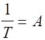 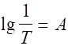 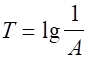
1103
一有色溶液对某波长光的吸收遵守比尔定律。当选用2.0cm的比色皿时,测得透射比为T,若改用1.0cm的吸收池,则透射比应为----------------------------------------------------------( )
(A) 2T (B) T/2 © T2 (D) T1/2
1104
符合比尔定律的有色溶液,浓度为c时,透射比为T0,浓度增大一倍时,透射比的对数为----------------( )
(A) T0/ 2 (B) 2T0 (C) (lgT0)/2 (D) 2lgT0
1105
有色络合物的摩尔吸光系数(e)与下述各因素有关的是-----------------------------------( )
(A) 比色皿厚度 (B) 有色络合物的浓度
(C) 入射光的波长 (D) 络合物的稳定性
1106
摩尔吸光系数(e)的单位为-----------------------------------------------------------------------( )
(A) mol/(L・cm) (B) L/(mol・cm) (C) mol/(g・cm) (D) g/(mol・cm)
1107
以下说法错误的是--------------------------------------------------------------------------------( )
(A) 摩尔吸光系数e随浓度增大而增大 (B) 吸光度A随浓度增大而增大
(C) 透射比T随浓度增大而减小 (D) 透射比T随比色皿加厚而减小
1108
以下说法正确的是--------------------------------------------------------------------------------( )
(A) 透射比T与浓度呈直线关系
(B) 摩尔吸光系数e随波长而变
(C) 比色法测定MnO4-选红色滤光片,是因为MnO4-呈红色
(D) 玻璃棱镜适于紫外区使用
1109
指出下列表述中的错误------------------------------------------------------------------------ ( )
(A) 吸收峰随浓度增加而增大,但最大吸收波长不变
(B) 透射光与吸收光互为补色光,黄色和蓝色互为补色光
(C) 比色法又称分光光度法
(D) 在公式 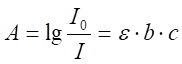
1110
某金属离子M与试剂R形成一有色络合物MR,若溶液中M的浓度为1.0×10-4 mol/L,用1cm比色皿于波长525nm处测得吸光度A为0.400, 此络合物在525nm处的摩尔吸光系数为----( )
(A) 4.0×10-3 (B) 4.0×103 (C) 4.0×10-4 (D) 4.0×105
1111
相同质量的Fe3+和Cd2+[Ar(Fe)=55.85, Ar(Cd)=112.4] 各用一种显色剂在同样体积溶液中显色,用分光光度法测定,前者用2cm比色皿,后者用1cm比色皿, 测得的吸光度相同,则两有色络合物的摩尔吸光系数为-----------------------------------------------------------------------( )
(A) 基本相同 (B) Fe3+为Cd2+的两倍
(C) Cd2+为Fe3+的两倍 (D) Cd2+为Fe3+的四倍
1112
有色溶液的光吸收曲线(吸收光谱曲线)是以______________________为横坐标,以___________________为纵坐标绘制的。
1113
一有色溶液在某波长下遵守比尔定律,浓度为x mol/L时吸收入射光的15.0%, 在相同条件下,浓度为2x的该有色溶液的T是________________________%。
1114
一符合比尔定律的有色溶液,当浓度为c时,透射比为T,若其它条件不变,浓度为c/3时,T为_________,浓度为2c时,T为_____________。
1115
朗伯-比尔定律A = abc中,c代表_________b代表__________________。浓度以g/L为单位时, a称为___________。若浓度以mol/L为单位时,a用_______符号表示,称为_________________________。
1116
某有色物质的溶液,每50mL中含有该物质0.1mmol,今用1 cm比色皿,在某波长下测得透射比为10%,则吸光度A值为_________________,摩尔吸光系数(e)值为 _________________。若浓度增大,则透射比____________,吸光度____________, 摩尔吸光系数_____________(填增大、减小或不变)。
1117
有一单色光通过厚度为1cm的有色溶液,其强度减弱20%。若通过5cm厚度的相同溶液, 其强度减弱百分之几?
1118
某学生由于粗心,误将蒸馏水空白调到透射比95%,而不是100%。在此条件下测出某有色溶液的透射比为35.2%。试问该有色溶液正确透射比应是多少?
1119
利用Cu(NH3)42+的蓝色以吸光光度法测Cu2+,所用滤光片应为----------------------( )
(A) 蓝色 (B) 黄色 (C) 红色 (D) 绿色
1120
分光光度计检测器直接测定的是--------------------------------------------------------------( )
(A) 入射光的强度 (B) 吸收光的强度 (C) 透过光的强度 (D) 散射光的强度
1121
吸光光度分析中比较适宜的吸光度范围是--------------------------------------------------( )
(A) 0.1~1.2 (B) 0.2~0.8 (C) 0.05~0.6 (D) 0.2~1.5
1122
在作分光光度测定时,下列有关的几个步骤: ①旋转光量调节器, ②将参比溶液置于光路中, ③调节至A=∞, ④将被测溶液置于光路中, ⑤调节零点调节器,⑥测量A值, ⑦调节至A=0。其合理顺序是--------------------------------------------------------------------------------( )
(A) ②①③⑤⑦④⑥ (B) ②①⑦⑤③④⑥
(C) ⑤③②①⑦④⑥ (D) ⑤⑦②①③④⑥
1124
下列表述中错误的是--------------------------------------------------------------------------( )
(A) 比色分析所用的参比溶液又称空白溶液
(B) 滤光片应选用使溶液吸光度最大者较适宜
(C) 一般说,摩尔吸光系数e 在105~106L/(mol・cm)范围内,可认为该反应灵敏度是高的
(D) 吸光度具有加和性
1126
在分光光度计上分别读出透射比(T%)和吸光度(A),将其对应值填入空格
|
T/ % |
0 |
|
|
100 |
|
A |
|
0.301 |
1.00 |
|
1127
用分光光度法测定时,工作(或标准)曲线是以__________为横坐标,以______为纵坐标绘制的。
1128
光电比色中滤光片的选择原则是_____________________________________________ _____________________________________________________________。
分光光度计中光量调节器的作用是____________________________________________ ____________________________________________________________。
1130
填写下表空格
|
分类 |
波长范围/nm |
光源 |
单色器 |
光检测器 |
国产型号 |
|
可见 分光光度计 |
420 ~ 700 |
|
|
|
72型 |
|
360 ~ 800 |
|
|
|
721型 |
|
|
紫外可见 分光光度计 |
200 ~ 1000 |
|
|
|
UV-240 |
1132
图1~图4是分光光度法中常见的图形,它们分别代表什么曲线(填A、B、C 、D)
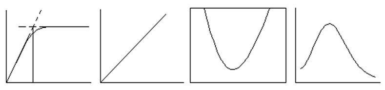
图 1 图 2 图 3 图 4
(1) 图1 __________ A. 工作曲线
(2) 图2 __________ B. 吸收曲线
(3) 图3 __________ C. 络合比法测定络合物组成
(4) 图4 __________ D. 测量结果的相对误差
1133
用分光光度法进行下列测定,选择适当的参比溶液(填A,B,C,D)。
(1) 在pH5时,以二甲酚橙(XO)测定无色水样中的锌 ____________
(2) 以铬天青S测定含Al试样中的Al ____________
(3) 用KIO4法测定Mn ____________
(4) 用KSCN测定含Ni、Co试样中的Co ____________
（A） 蒸馏水 （B） 试样溶液 （C） 显色剂溶液 （D） 试样+显色剂+掩蔽剂
1134
在分光光度计的检流计上刻有透射比T和吸光度A,两者的关系为_________。当T=10%时, A为_________。测定时通常读取_________,这是因为__________。
1135
在相同条件下,测定某物质浓度,当浓度为c时,T=80%, 若浓度为2c时, T=________。
1136
某显色剂与Co(Ⅱ)形成有色络合物,在lmax=598nm处测得吸光度A为0.58,则透射比T=_________。某显色剂与Cu(Ⅱ)形成有色络合物,在lmax=540nm处测得透射比T=70.0%,其吸光度A=______________。若使用的仪器测量误差(DT)为±0.5%,上述两结果由仪器测量引起的浓度相对误差分别为(a)______________和 (b)_____________。
1137
指出下列俗名所代表的试剂(填A,B,C,D)。
(1) 邻二氮菲 ______ (2) 双硫腙 ______
(3) 铜铁试剂 ______ (4) 丁二酮肟 ______
（A） 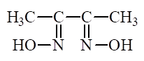 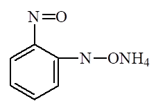
（C） 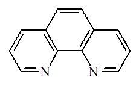 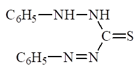
1139
某一有色溶液的浓度为c,对某一波长的入射光吸收了25%。
(1) 计算在同一条件下该溶液浓度为4c时的透射比 (T)和吸光度(A)。
(2) 已知测定时仪器透射比读数误差DT=±0.01,计算浓度为4c时,因读数误差引起的测定结果的相对误差是多少?
1140
含磷0.35mg/mL的标准液显色后,测得吸光度为0.450, 同条件下测含磷未知液吸光度为0.540,则未知液中磷的浓度为_______________mg/L。
1141
用普通吸光光度法测得标液c1的透射比为20%,试液透射比为12%。若以示差法测定,以标液c1作参比,则试液透射比为___________,相当于将仪器标尺扩大______倍。
1142
一有色化合物的0.0010%水溶液在2cm比色皿中测得透射比为52.2%。已知它在520nm处的摩尔吸光系数为2.24×103L/(mol・cm)。求此化合物的摩尔质量。
1143
用双硫腙分光光度法测Pb2+,已知Pb2+的质量浓度为0.080 mg/50 mL,用2 cm比色皿于520 nm 处测得T=53.0%,计算吸光系数和摩尔吸光系数[Ar(Pb)=207.2]。
1144
某酸性溶液含0.088mg Fe3+,用KSCN显色后稀至50mL,在480nm波长处用1cm比色皿测得吸光度为0.740。计算Fe-SCN络合物的摩尔吸光系数[Ar(Fe)=55.85]。
1145
欲测定某有机胺的摩尔质量,先用苦味酸(M=229g/mol)处理,得到苦味酸胺(系1:1的加合物)。今称取此苦味酸胺0.0300 g,溶于乙醇并配制成1L溶液, 用1.00cm的比色皿,于其最大吸收波长380nm处测得吸光度为0.800[已知苦味酸胺在380nm处的摩尔吸光系数e =1.3×104L/(mol・cm) ]。试求该有机胺的摩尔质量。
1146
现以TAR为显色剂测定人发中的微量铁。称取试样0.200g,经处理后转移至25 mL容量瓶中定容,移取10.0mL于另一25mL容量瓶中,加显色剂2mL,加水至刻度。用1cm 比色皿以试剂空白为参比,于波长730 nm处测得其吸光度为0.360。试计算试样中的铁含量[已知e730=3.0×104L/(mol・cm), Ar(Fe)=55.85]。
1147
用丁二酮肟比色法测定某合金钢中的镍。称取一定量的试样溶解后定容为100mL。移取10mL, 显色后稀释至50mL。用1.00cm的比色皿于470nm处测其吸光度 [e470=1.3×104 L/(mol・cm)]。欲使镍的质量分数恰好等于吸光度值,则应称取试样多少克? [Ar(Ni)=58.69]
1148
称取某合金钢试样0.2000g,酸溶后其中的钒被氧化为VO2+,并使VO2+与钽试剂反应生成有色螯合物,定容为100mL。然后取出部分溶液,用等体积的CHCl3 萃取一次(设分配比D=10),有机相在530nm处有最大吸收, e530=5.7×104 L/(mol・cm),若使用1cm的比色皿,测得吸光度A=0.570,计算试样中V的质量分数。
[Ar(V)=50.94]
1149
某一含锰为8.57mg/mL的KMnO4溶液,在波长为525nm处以蒸馏水为参比溶液测得透射比T=21.6%,然后以上述KMnO4溶液作参比调节透射比T=100%, 测量另一浓度较高的 KMnO4 溶液, 测得其透射比 T= 25.7%, 计算此 KMnO4溶液的质量浓度(mg/mL)。
1150
已知KMnO4标准溶液浓度为0.02000mol/L,用其配制250mL质量浓度为0.1000mg/mL 的标准锰溶液需取多少毫升?一定条件下测该标准溶液吸光度为0.420。取未知Mn2+溶液10.00mL经氧化为MnO4-后,定容为50mL,同样条件下测得吸光度为0.310。求未知液中Mn2+的质量浓度(以mg /mL表示)。
[Mr(KMnO4)=158.64, Ar(Mn)=54.94]
1151
为测定含铁试样,吸取铁标准溶液(r(Fe)=5.00×10-4g/mL)10.00mL,稀释至100.0mL,从中移取5.00mL进行显色并定容为50mL,测其吸光度(A)为0.230。称取含铁试样1.50g,溶解,稀释并定容为250mL,取5.00mL进行显色,并定容为50mL,同条件下测得其吸光度(A)为0.200。试求试样中铁的质量分数。
1152
某一含Fe溶液在λ508nm处,使用1cm比色皿,用邻二氮菲分光光度法测定,蒸馏水作参比,得透射比T=0.079。已知e =1.1×104L/(mol・cm)。若用示差法测定上述溶液,问需多大浓度的铁作参比溶液,才能使测量的相对误差最小?
1153
某金属离子M2+能与过量的络合剂X-生成络离子MX3-,并在350nm处有最大吸收。今有两份含M2+及X-的溶液,M2+的总浓度均为5.0×10-4mol/L,而X-的总浓度分别为0.20mol/L及2.50×10-3mol/L,用1.0cm比色皿于350nm处分别测得其吸光度为0.80和0.64。设在第一种情况下,M2+完全被络合,求MX3-的总稳定常数。
1154
某酸碱指示剂在水中存在下列平衡:
HIn === H+ + In-
(黄色) (蓝色)
在650nm处仅In-有吸收。今配制两份同浓度而不同pH的指示剂溶液,于650nm处在同样测量条件下测量吸光度,得到pH1=4.50时, A1= 0.180; pH2=5.10时, A2= 0.360,求该指示剂的理论变色点。
1156
以邻二氮菲(以R表示)作显色剂用光度法测定Fe,显色反应为:
Fe2+ + 3R = FeR3 lgK(FeR3)=21.3
(1)若过量显色剂的总浓度为[R’]=1.0×10-4mol/L,问在pH=3.0时能否使99.9%的Fe2+络合为FeR32+?(pH=3.0时,lgaR(H)=1.9)
(2)称取0.5000g试样,制成100mL试液,从中移取10.00mL显色后稀释为50mL, 用1.0cm比色皿,在510nm处测得透射比T=60.0%。求试样中Fe的质量分数。 [已知e510=1.1×104L/(mol・cm), Ar(Fe)=55.85]
3101
符合朗伯比尔定律的一有色溶液,通过1cm比色皿,测得透射比为80%,若通过5cm的比色皿,其透射比为-----------------------------------------------------------------------------------------( )
(A) 80.5% (B) 40.0% (C) 32.7% (D) 67.3%
3102
某同学进行光度分析时,误将参比溶液调至90%而不是100%,在此条件下,测得有色溶液的透射比为35%,则该有色溶液的正确透射比是-------------------------------------------------( )
(A) 36.0% (B) 34.5% (C) 38.9% (D) 32.1%
3103
以下说法错误的是--------------------------------------------------------------------------------( )
(A) 吸光度A与浓度呈直线关系 (B) 透射比随浓度的增大而减小
(C) 当透射比为"0"时吸光度值为∞ (D) 选用透射比与浓度做工作曲线准确度高
3104
以下说法错误的是--------------------------------------------------------------------------------( )
(A) 朗伯-比尔定律只适于单色光 (B) Fe2+-邻二氮菲溶液是红色,应选择红色滤光片
(C) 紫外区应选择的光源是氢灯 (D) 摩尔吸光系数e值愈大,说明反应愈灵敏
3105
朗伯-比尔定律的正确表述是_________________________________________________ ____________________________。
3106
吸光光度法进行定量分析的依据是_______________________, 用公式表示为____ _____________________________________________, 式中各项符号各表示:____________ _______________________________________________。
3107 透射比与吸光度的关系的数学表达式是_______________。
3108 朗伯-比尔定律的吸光系数(a)和摩尔吸光系数(e)值的单位各是________和 ______________。
3109 符合朗伯-比尔定律的一有色溶液,浓度为c (mol/L),其吸光度A的数学表达式应为 _________________________。浓度为r (g/L),表达式则应为________________。
3110 符合朗伯-比尔定律的某有色溶液,浓度为c时,透射比为T0,浓度增大一倍时, 透射比的对数为_______________________。
3111 符合朗伯-比尔定律的一有色溶液,在不同波长测定的摩尔吸光系数 ________ (指相同与否),在________________波长条件下,摩尔吸光系数的数值最大。
3112 符合朗伯-比尔定律的一有色溶液,当浓度改变时,其最大吸收波长(lmax)________,摩尔吸光系数________(回答变或不变)。
3113 符合朗伯-比尔定律的一有色溶液,当浓度为c时,透射比为T,在液层不变的情况下,透射比为T1/2和T3/2时,其溶液的浓度分别为________和________。
3114
符合朗伯-比尔定律的一有色溶液,通过1cm比色皿时,光减弱程度为66.2%,其吸光度值为________,当将原溶液稀释至三倍时,其透射比为__________。
3115
符合朗伯-比尔定律的一有色溶液,通过1cm比色皿,光减弱程度为50%,若通过2cm 比色皿,其光减弱程度为_________,吸光度值为__________。
3116
有一符合朗伯-比尔定律的有色溶液,当先选用1cm比色皿时测得透射比为T1/2, 若选用2cm比色皿时透射比为________。
3117 摩尔吸光系数的物理意义是_________________________________________________ ______________________。
3118 用双硫腙光度法测Cd2+[Ar(Cd)=112.4]时,已知e520=8.8×104L/(mol・cm), 其桑德尔灵敏度S为________。
3119
某显色剂R分别与金属离子M和N形成有色络合物MR和NR,在某一波长下分别测得MR和NR的吸光度为0.250和0.150,则在此波长下MR和NR的总吸光度为_____。
3120
某人误将参比溶液的透射比调至98%,而不是100%, 在此条件下测得有色溶液的透射比为36%,则该有色溶液的正确透射比应为_________%。
3121
符合朗伯-比尔定律的有色溶液进行光度分析时,所选择的滤光片应是有色溶液的 ____________________色。
3122
以下说法错误的是--------------------------------------------------------------------------------( )
(A) 摩尔吸光系数与有色溶液的浓度有关
(B) 分光光度计检测器,直接测定的是透射光的强度
(C) 比色分析中比较适宜的吸光度范围是0.2~0.8
(D) 比色分析中用空白溶液作参比可消除系统误差
3123
为了降低测量误差,吸光光度分析中比较适宜的吸光值范围是__________________,吸光度值为_______时误差最小。
3124
比色分析中滤光片的作用是_________________________________________,它与带色溶液的关系是______________,对同一种溶液选不同的滤光片时其吸光度值____________ (回答相同不相同)。
3125
国产721型分光光度计单色器元件是 ________, 检测器(接受器)元件是 _________。
3126
显色剂R与金属离子M形成有色络合物MR,反衬度(对比度)是用来表示__________ ___________________,一般要求反衬度约为_______________。
3127
为消除系统误差,光度法要用参比溶液调节仪器的_________。当试液与显色剂均无色时可用________作参比溶液;若显色剂无色而试液中存在其它不与显色剂反应的有色离子时,可用不加显色剂的_________作参比溶液;若显色剂及试液均有色,可将一份试液加入适当掩蔽剂,将________掩蔽起来,再加________及其它试剂后作为参比溶液。
3128
某显色剂R与金属离子M和N分别形成有色络合物MR和NR,在某一波长测得MR和NR的总吸光度A为0.630。已知在此波长下MR 的透射比为 30%, 则NR的吸光度为_________。
3129 采用示差光度法测量含铁试液时,用30mg/mL的Fe3+溶液作参比,在相同条件下显色,用1cm比色皿测得未知液和参比液吸光度之差为0.300。已知e =2.8×103 L/(mol・cm), 则试液中Fe3+的质量浓度为________mg/L。
3130
用示差法测定一较浓的试样。采用的标样c1在普通光度法中测得的透射比为20%。以c1作为参比采用示差法测定,测得试样的透射比为60%。相当于标尺放大了5倍,试样在普通光度法中透射比为________。
3131
以丁二酮肟光度法测定Ni2+(Ar=58.69), 已知标液的浓度为5.9×10-1mg/mL, 在470nm用2cm比色皿测得透射比为55%。计算摩尔吸光系数。
3132
某有色溶液的摩尔吸光系数为1.1×104L/(mol・cm),用0.5cm 比色皿测得其光的减弱程度为31.6%。计算此溶液的浓度(mol/L)。
3133
用双硫腙显色剂在533nm处测定Cu2+,用1cm比色皿测得吸光度为0.010,已知此方法的桑德尔灵敏度为0.0022mg /cm2。计算该溶液中铜的质量浓度(mg/mL)。Ar(Cu)=63.55
3134
双硫腙试剂与Cd2+形成红色络合物,可用光度法测定。已知e520= 8.8×104L/(mol・cm),使用2cm比色皿,测得透射比为60.3%。计算Cd的质量浓度(mg/mL)。Ar(Cd)=112.4
3135
用光度法测定一有色物质。已知摩尔吸光系数是2.5×104L/(mol・cm),每升中含有5.0×10-3g溶质,在1cm比色皿中测得的透射比是10%。计算该物质的摩尔质量。
3136
某钢样中含锰约0.15%,酸溶后氧化为MnO4- 并定容至 100mL, 用光度法于 525nm处,用1cm比色皿测定。已知e = 2.2×103L/(mol・cm)。若希望仪器测量相对误差最小,问应称取试样多少克?Ar(Mn)=54.94
3137
已知某钢样含锰约为试样的0.50%,将试样溶解使锰氧化为MnO4-,最后定容于100mL容量瓶中。今采用分光光度法测定锰,在525nm处,以1cm 比色皿测量其吸光度。为使测量误差所引起的浓度相对误差最小,问应称取钢样多少克 ? [已知e(MnO4-]= 4.3×103L/(mol・cm), Ar(Mn)=54.5]
3138
称取1.000g钢铁试样,用H2SO4-H3PO4混合酸溶解,以过硫酸铵-银盐将锰氧化为MnO4-,最后稀至100.0mL。另称取含锰0.25%的同类标准试样0.5780g,按上述同样步骤操作测定,测得试液的吸光度比标准钢样的吸光度大2.36倍。 计算试样中锰的质量分数。
3139
采用一般分光光度法,在525nm处,以1cm比色皿测量1.00×10-3mol/L KMnO4 标准溶液和一KMnO4试液,其吸光度值分别为0.700和1.00。今采用示差光度法,以 1.00×10-3mol/L KMnO4标准溶液作参比,问该试液的吸光度为多少?
3140
称取合金钢试样0.5250g,用H2SO4-H3PO4混合酸溶解,以过硫酸铵- 银盐氧化试样中的Mn为MnO4-,然后定容于100mL容量瓶中,用1cm比色皿,于525nm 处测得吸光度为0.496。已知其摩尔吸光系数e525=2.24×103L/(mol・cm)。计算试样中锰的质量分数。 [Ar(Mn)=54.94]
3141 有一试样含有x和y两种组分,组分x在l1和l2的摩尔吸光系数分别为 1.98 ×103L/(mol・cm)和
2.80×104L/(mol・cm);组分y在l1和l2的摩尔吸光系数分别是2.04×104L/(mol・cm)和3.13×102L/(mol・cm),用相同的比色皿, 测得总吸光度 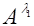 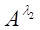
3142
某金属离子M2+与卤离子X-在弱酸性条件下形成MX3-络合物(不存在其他型体的络合物),该络合物在372nm处有最大吸收。今有相同体积的弱酸性试液两份, 其中c(M2+)均为5.0×10-4mol/L。在第一份显色液中c(X-) = 0.20mol/L, M2+显色完全, 以 1cm比色皿, 于 372 nm处测得吸光度为 0.748; 在第二份显色液中, c(X-)=2.0×10-3mol/L, 在相同条件下测得吸光度为0.587。计算MX3-络合物的稳定常数K(MX3-)。
3143
某显色络合物MR2,M的总浓度为5.0×10-5mol/L, R的总浓度为2.0×10-5mol/L, 在一定波长下用1cm比色皿测得透射比为63%,已知e = 4×104L/(mol・cm)。试计算该络合物的稳定常数。
3144
某指示剂HIn的摩尔质量为396.0,今称取0.396g HIn,溶解后定容为1L。于3个100mL容量瓶中各加入上述HIn溶液1mL,用不同pH缓冲液稀释至刻线,用1cm比色皿于560nm处测得吸收值如下:
pH 2.0 7.60 11.00
A 0.00 0.575 1.76
计算 (1) HIn及In-的摩尔吸光系数 (2) HIn的pKa
3145
用普通光度法测定1.00×10-3mol/L锌标液和锌试样,吸光度分别为0.700和 1.00,二者透射比相差多少?若用示差分光光度法,以1.00×10-3mol/L的锌标液作参比,试液的吸光度值为多少?此时二者的透射比相差多少? 示差法的透射比之差比普通法大多少倍?
3146
称取1.00g钢样,酸溶后氧化锰为MnO4-并定容至250mL, 用光度法测定的吸光度为1.00×10-3mol/L KMnO4溶液的1.5倍,计算钢中锰的质量分数。[Ar(Mn)= 54.94]
5101
某金属离子M的浓度为1.0´10-5 mol/L，与过量的显色剂R′生成有色络合物MR′，与过量的显色剂R″生成有色络合物MR″。在l=525nm处，用1cm的比色皿测得MR′的吸光度A为0.400;测得MR″溶液的投射比为85%，求这两种有色络合物的e值，哪一种显色反应更灵敏？
5102
强心药托巴丁胺(Mr=270)在260nm波长处有最大吸收，e =703 L×mol-1×cm-1.取一片该药溶于水稀释至2.00 L,静置后取上层清液用1.00cm吸收池于260nm波长处测得吸光度为0.687，计算药片中含托巴丁胺多少克?
5103
尿中磷可用钼酸铵处理，再与氨基奈酚磺酸形成钼蓝，lmax= 690 nm。一病24 h排尿1270 mL,尿的pH=6.5。取1.00mL尿样，用上法显色后稀释至50.00mL，另取一系列磷标准溶液同样处理，在690nm波长处以试剂空白为参比测得吸光度如下：
溶液r(P)/1.0´10-8g×mL-1 2.00 4.00 6.00 8.00 尿样
A 0.205 0.410 0.615 0.820 0.625
计算该病人每天排出的磷有多少克？
5104
已知维生素B12的E1%1cm(361nm)=207, 准确称取试样30.0mg,加水溶解后稀释至1000mL,在波长361nm处用1.00cm吸收池测得溶液的吸光度为0.618，计算试样中的w(B12)。
5105
吸光光度法主要应用于测定 组分，与化学分析法比较，其特点是 。
5106
在光度法中，透过光强度与入射光强度之比I/I0称为 ，它的负对数称为 。
5107
浓度均为0.0100mol/L的金属离子M与试剂R等体积混合后，生成带色络合物MR。已知该络合物的离解常数为6.00´10-4，在550nm处的摩尔吸光系数为450L/（mol×cm），计算用1cm比色皿，在该波长下的吸光度值。
5108 桑德尔灵敏度(S)表示的是 ，单位是 。
5109
有色溶剂对光有选择性的吸收，为了使测定结果有较高的灵敏度，测定时选择吸收的波长应在 处，有时选择肩峰为测量波长是因为 。
5110 光度分析法中，引起偏离比尔定律的原因主要有 和 二方面。
5111 光度分析法中，可见光的光源采用 ，紫外光的光源采用 。
5112
根据下图求出有色络合物的组成
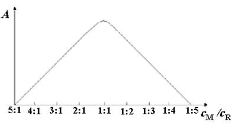
5113
根据下图求出有色络合物的组成
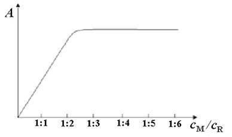
5114
M和N两种组分在l1和l2处均有吸收，求解混合溶液中M，N组分的联立方程式是 。
5115 多组分的吸收峰互相重叠，欲进行每个组分的测定是根据 和通过 的方法得到的。
5116
某物质的摩尔吸光系数 e 值很大，则表明------------------------------------------------( )
(A)该物质的浓度很高 (B)该物质对某波长的光吸收能力很强
(C)测定该物质的灵敏度很高 (D)测定该物质的准确度高
5117
目视比色法中，常用的标准系列法是比较--------------------------------------------------( )
(A)透过溶液的光强度 (B)溶液吸收光的强度
(C)溶液对白色的吸收程度 (D)一定厚度溶液的颜色深浅
5118
若显色剂无色，而被测溶液中存在其它有色离子，在比色分析中，应采用的参比溶液是----- ( )
(A)蒸馏水 (B)显色剂
(C)加入显色剂的被测溶液 (D)不加显色剂的被测溶液
5119
高含量组分的测定，常采用差示吸光光度法，该方法所选用的参比溶液的浓度cs与待测溶液浓度cx的关系是---------------------------------------------------------------------------( )
(A) cs = cx (B) cs > cx (C) cs稍低cx (D) cs =0
5120
桑德尔灵敏度S与摩尔吸光系数e的关系是---------------------------------------------( )
(A) S=M/(e´106) (B) S=e/M
(C) S=M/e (D) S=M×e´106
5121
符合朗伯-比尔定律的有色溶液，当有色物质的浓度增大时，其最大吸收波长 ，投射比 。(填 增大，减小或不变)
5122
互补色是指 。
5123
有一质量浓度为15.0 mg/mL, 摩尔质量为280g/mol的有机化合物，于2cm比色皿中，在某一波长下测得投射比为35%，求在该波长下的 e 值。
5124
苯胺与苦味酸生成盐，在369nm处有最大吸收，其e值为1.26´104L/（mol×cm）。将0.2000g苯胺(Mr=93.0)定溶于500mL水中，取其25.00mL与苦味酸充分反应后，以水稀释至250mL，取此液10.00mL，稀至100mL后，于1cm吸收池，在359nm处测得吸光度为0.425, 求苯胺的质量分数。
5125
有一氨磺酰药片，氨磺酰的摩尔质量为270g/mol。将此药片溶解后定容为1L，在262nm处，摩尔吸光系数为703，用1cm比色皿测得吸光度为0.687，求此药片中氨磺酰的质量浓度(g/L)。
5126
钛-H2O2和钒-H2O2络合物的最大吸收波长分别在415nm和455nm处，取50.00mL 1.06´10-3mol/L钛-H2O2溶液，定容100mL, 以1cm比色皿在415nm和455nm处测得吸光度分别为0.435和0.246; 取25.00mL6.28´10-3mol/L钒-H2O2溶液，定容100mL, 以1cm比色皿在415nm和455nm处测得吸光度分别为0.251和0.377。取20.00mL钛钒混合液，加入H2O2显色后定容为100mL，以上述相同的条件测得A415=0.645, A455=0.553, 求原混合液中钛和钒的浓度。